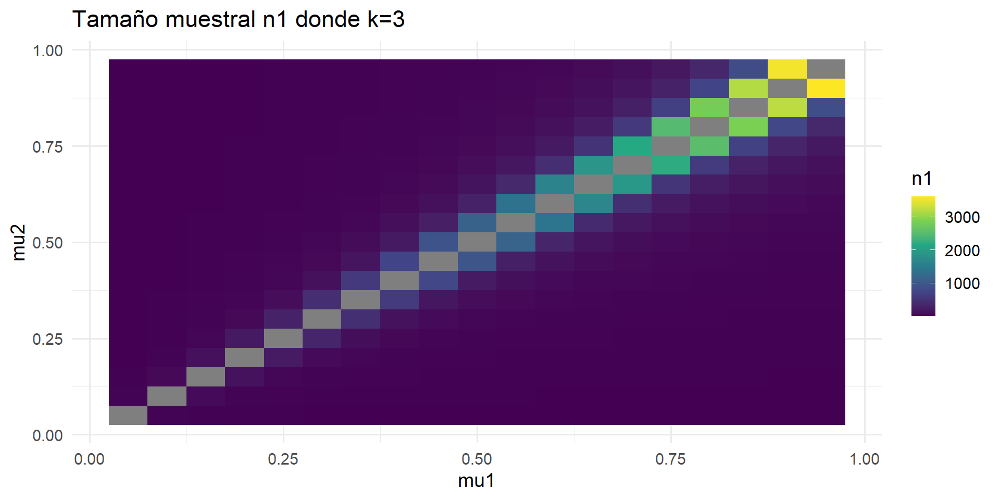

[1] 1903.282Muestreo para estudios de cohorte y casos y controles
Características del diseño en un estudio de cohortes
Es un estudio observacional y longitudinal que investiga la presencia o ausencia de la exposición de interes, además la ocurrencia del evento se puede determinar de manera prospectiva o retrospectiva.

Aplicación
Calcular el tamaño de muestra suponiendo que \(P_1 = 0.2\) y \(P_2 = 0.1\), \(α = 0.05\), \(β = 0.2\) y \(r = 1\) (un no expuesto por cada expuesto)
calc_muestra <- function(P1, P2, r, alpha, power){
# Z's
Za <- qnorm(1 - alpha/2)
Zb <- qnorm(1-power)
# P_M
PM <- (P1 + r*P2) / (r + 1)
# n'
n_prime <- (
Za*sqrt((r+1)*PM*(1-PM)) -
Zb*sqrt(r*P1*(1-P1) + P2*(1-P2))
)^2 / ( r*(P1 - P2)^2 )
# Corrección de Yates
n_yates <- (n_prime/4) *
( 1 + sqrt(1 + 2*(r+1)/(n_prime*r*abs(P2-P1))) )^2
return( n_yates)
}
res <- calc_muestra(
P1 = 0.2,
P2 = 0.1,
r = 1,
alpha = 0.05,
power = 0.80
)
res[1] 218.5058Entonces el tamaño de muestra calculado es \(n = 219\) en ambos grupos por la correción de yates.
Se realiza la simulación de parámetros donde \(\alpha\), \(power\) y \(r\) son fijos, y \(P_1\) y \(P_2\) son variables.
- Para \(\alpha=0.05\),\(power=0.8\) y \(r=1\)

- Para \(\alpha=0.05\),\(power=0.8\) y \(r=2\)

- Para \(\alpha=0.05\),\(power=0.8\) y \(r=3\)

- Para \(\alpha=0.05\),\(power=0.8\) y \(r=4\)

- Para \(\alpha=0.05\),\(power=0.8\) y \(r=5\)

Aplicación
Como parte de un estudio de los efectos a largo plazo del ruido, se diseña un estudio de seguimiento de trabajadores de una industria ruidosa y de una ocupación menos ruidosa. Los sujetos serán seguidos de por vida, y periódicamente serán examinados en cuanto a disfunciones auditivas. Una encuesta previa sugiere una tasa de incidencia anual del 25% en dicha industria. ¿Cuántas personas se deberán seguir si queremos saber que esta tasa difiere del promedio nacional de disfunciones auditivas = 10%, con un nivel de significación del 5% y una potencia del 80%?
# Parámetros
mu1 <- 0.25
mu2 <- 0.10
alpha <- 0.05
beta <- 0.20
# k = n2 / n1 (modifícalo según tu diseño)
k <- 1 # n2 = n1
# Cuantiles Z
z_alpha_2 <- qnorm(1 - alpha/2)
z_beta <- qnorm(1 - beta)
mu_m <- (mu1 + mu2) / 2
# Términos de la fórmula
term1 <- z_alpha_2 * sqrt((1 + k) * mu_m^2)
term2 <- z_beta * sqrt(k * mu1^2 + mu2^2)
# Fórmula final
n1 <- (term1 + term2)^2 / (k * (mu1 - mu2)^2)
# Resultados
cat("n1 =", n1, "\n")n1 = 22.51058 Se tiene que para cada grupo se requeririan 23 personas.
Ahora si consideramos que la duración del estudio es de 5 años,tenemos los siguiente.
t<-5
fu_m<- (mu_m^3 * t)/(mu_m*t-1+exp(-mu_m*t))
fu_1<- (mu1^3 * t)/(mu1*t-1+exp(-mu1*t))
fu_2<- (mu2^3 * t)/(mu2*t-1+exp(-mu2*t))
# Términos de la fórmula
termf1 <- z_alpha_2 * sqrt((1 + k) *fu_m )
termf2 <- z_beta * sqrt(k * fu_1+ fu_2)
# Fórmula final
nf1 <- (termf1 + termf2)^2 / (k * (mu1 - mu2)^2)
nf1[1] 64.98394Se tiene que para cada grupo se requeririan 65 personas.
- Si \(n_2=n_1\) es decir \(k=1\).

- Si \(n_2>n_1\) es decir \(k>1\).

- Si \(n_2<n_1\) es decir \(k<1\).

- Si \(t=5\) y \(k=1\).

- Si \(t=5\) y \(k=3\).

- Si \(t=5\) y \(k=0.1\).

Características del diseño de casos y controles
Los estudios de casos y controles son diseños observacionales, analíticos y retrospectivos.

Aplicación
En una región donde el cólera es un problema grave de salud, se supone que el 30% de la población utilizan agua contaminada. Se desea realizar un estudio para estimar el OR con una precisión relativa del 25% (OR anticipado igual a 2) con un 95% de confianza. ¿Cuál es el tamaño de la muestra en los casos de cólera y en los controles?
Tenemos que \(P_2 = 0.3\), \(OR = 2\),\(\varepsilon = 0.25\) y \(\alpha = 0.05\).
Calculamos primero \(P_1\) mediante:
\[ P_1 = \frac{P_2}{(1 - P_2)/OR + P_2} = \frac{0.3}{0.7/2 + 0.3} \approx 0.46 \]
- Para una precisión relativa de \(10 \%\).

- Para una precisión relativa de \(30 \%\).

- Para una precisión relativa de \(60 \%\).

Aplicación
Calcular del tamaño muestral suponiendo que $P2 = 0.1 $y \(OR = 2.0\), \(α = 0.05\), \(β = 0.8\) y \(r = 1\) (un control por cada caso).
calc_nprime <- function(P1, P2, r, alpha, beta){
# Z de alfa y beta
Za <- qnorm(1 - alpha/2)
Zb <- qnorm(1 - beta)
# P_M
PM <- (P1 + r*P2) / (r + 1)
# n'
nprime <- (
(Za * sqrt((r + 1) * PM * (1 - PM)) -
Zb * sqrt(r * P1 * (1 - P1) + P2 * (1 - P2))
)^2
) /
( r * (P1 - P2)^2 )
return(nprime)
}
calc_n_yates <- function(nprime, P1, P2, r){
n <- (nprime / 4) *
( 1 + sqrt(1 + (2 * (r + 1)) / (nprime * r * abs(P2 - P1))) )^2
return(n)
}
calc_n_full <- function(P1, P2, r, alpha, beta){
nprime <- calc_nprime(P1, P2, r, alpha, beta)
n_yates <- calc_n_yates(nprime, P1, P2, r)
return(list(nprime = nprime, n_yates = n_yates))
}
calc_n_full(P1 = 0.1818, P2 = 0.1, r = 1, alpha = 0.05, beta = 0.80)$nprime
[1] 282.7969
$n_yates
[1] 306.7596- Un control por cada caso.

- Dos controles por cada caso.

- Tres controles por cada caso.